Fuse Block - Underhood
Electrical Center Identification Views
Fuse Block - Underhood Label
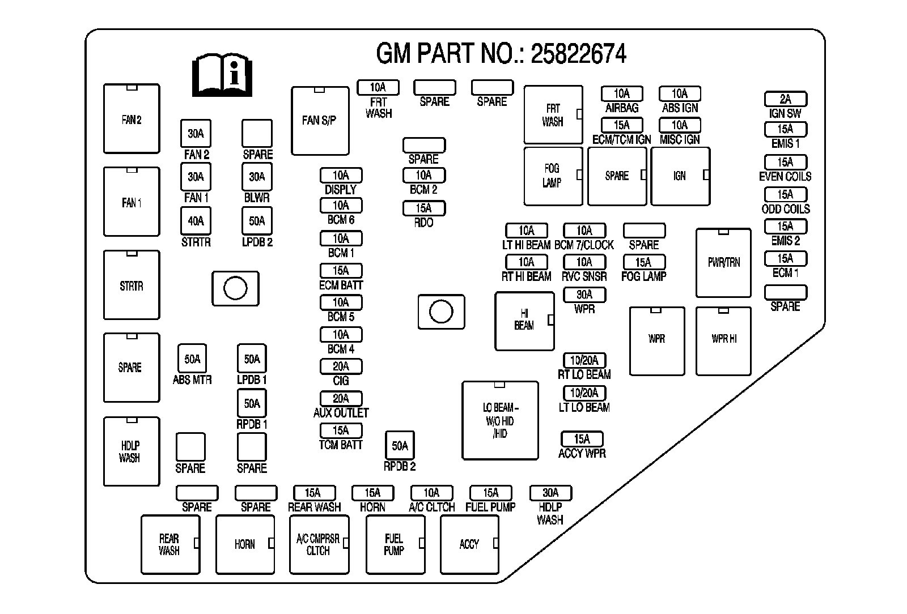
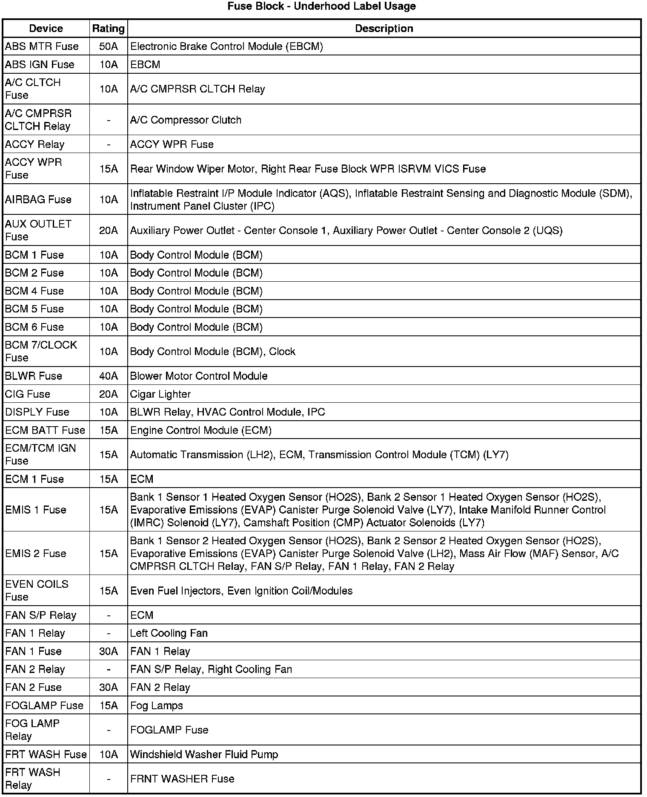
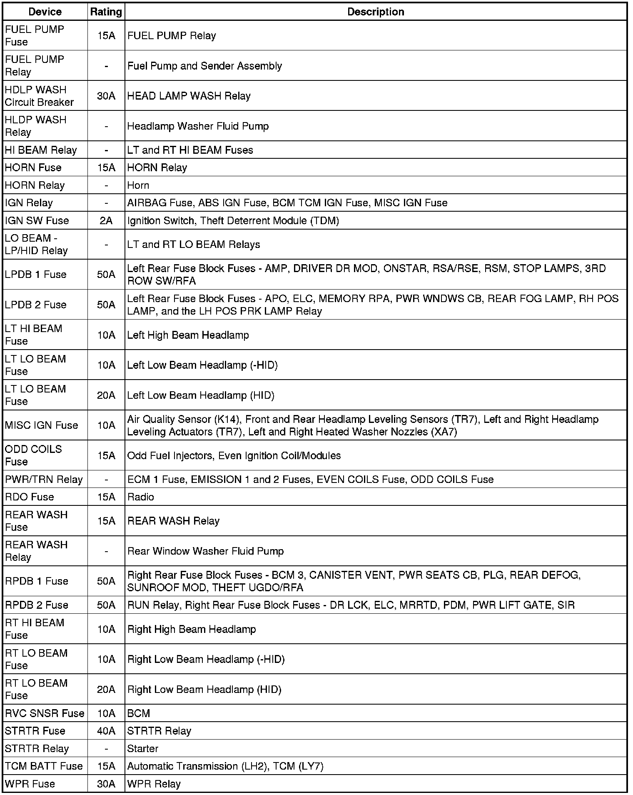
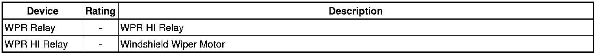
Fuse Block - Underhood Top View
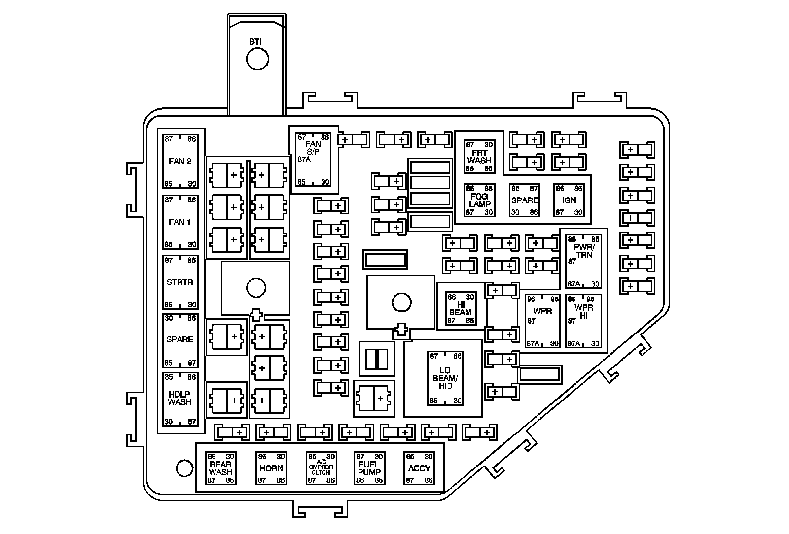
Fuse Block - Underhood Bottom View
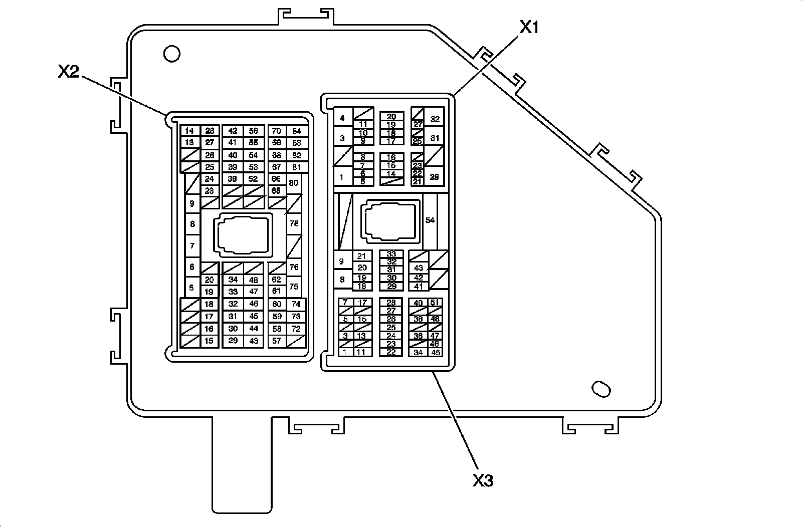
Fuse Block - Underhood X1
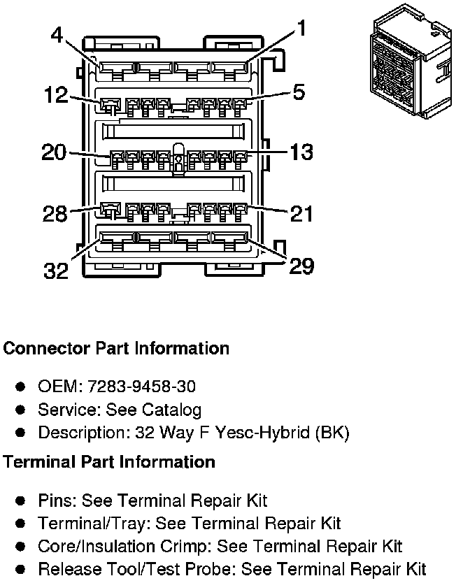
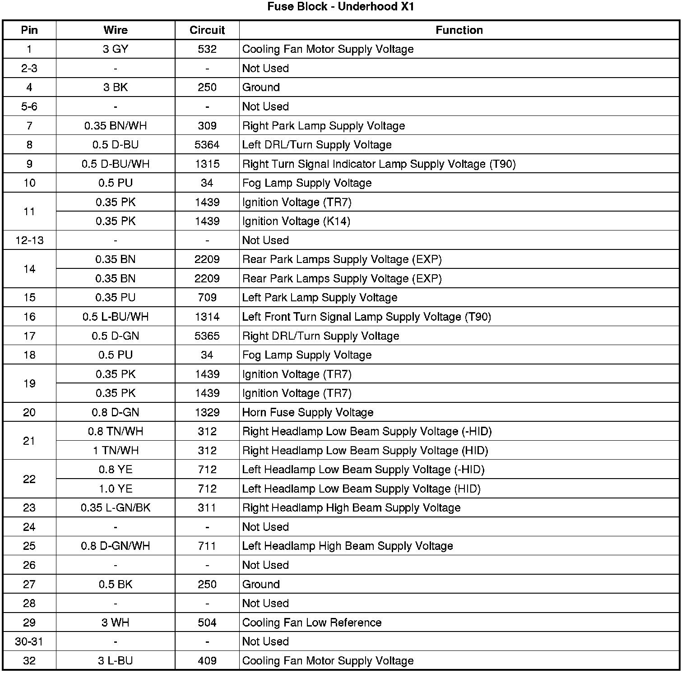
Fuse Block - Underhood X2
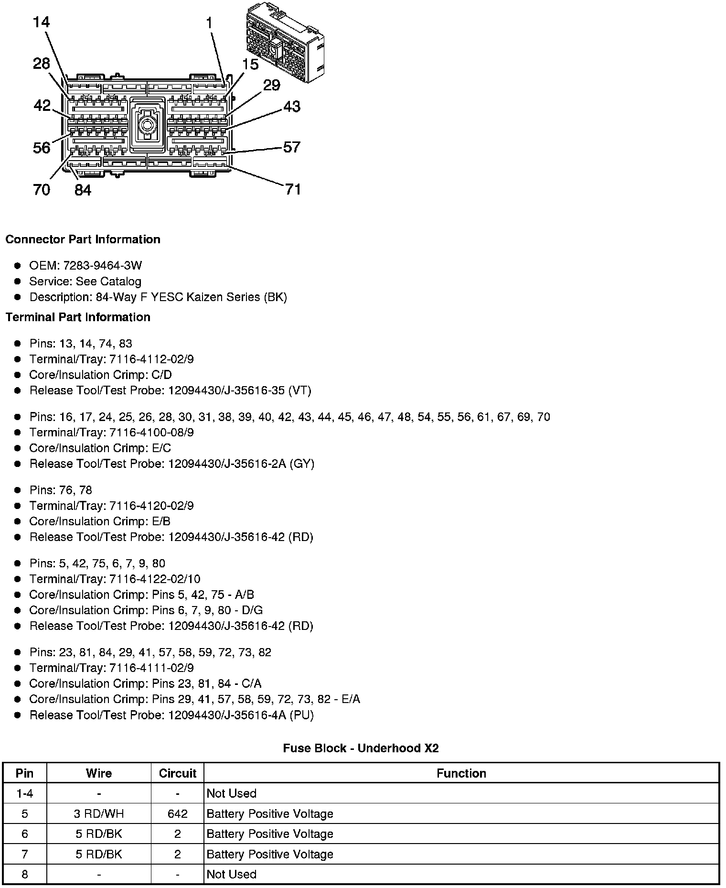
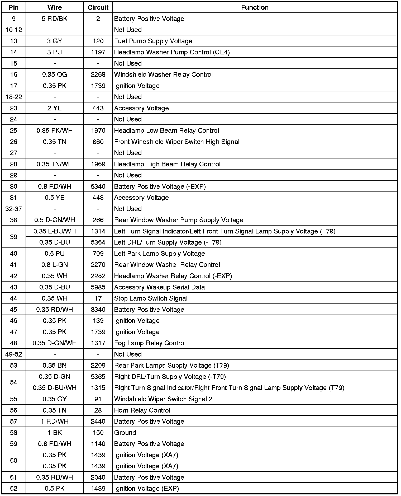
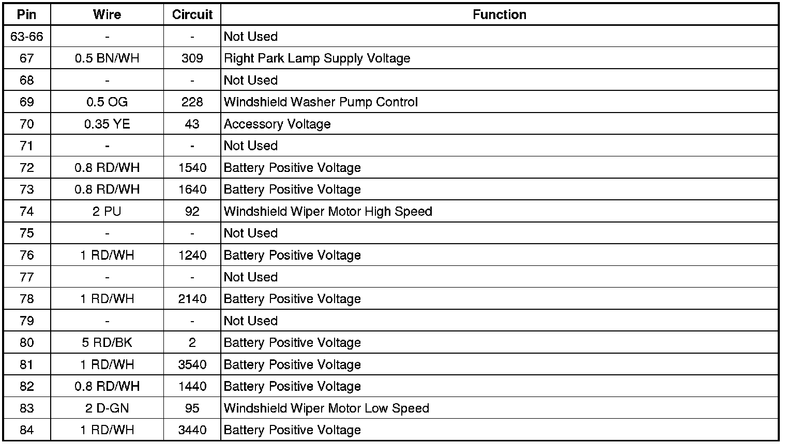
Fuse Block - Underhood X3
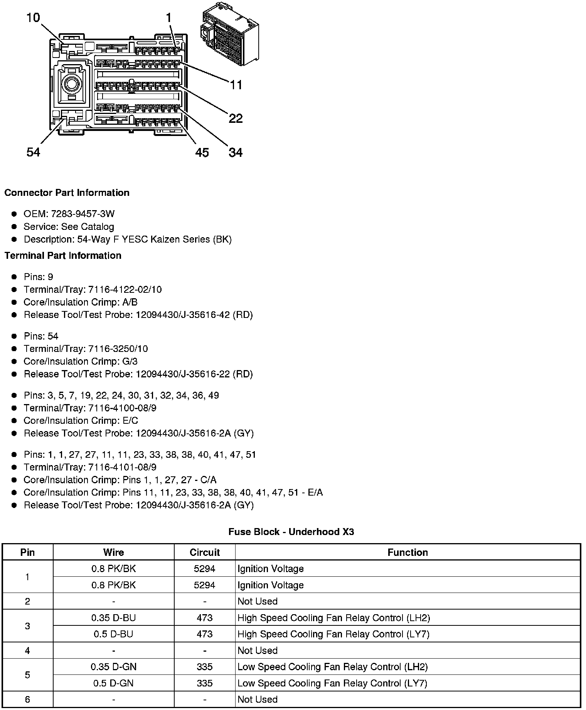
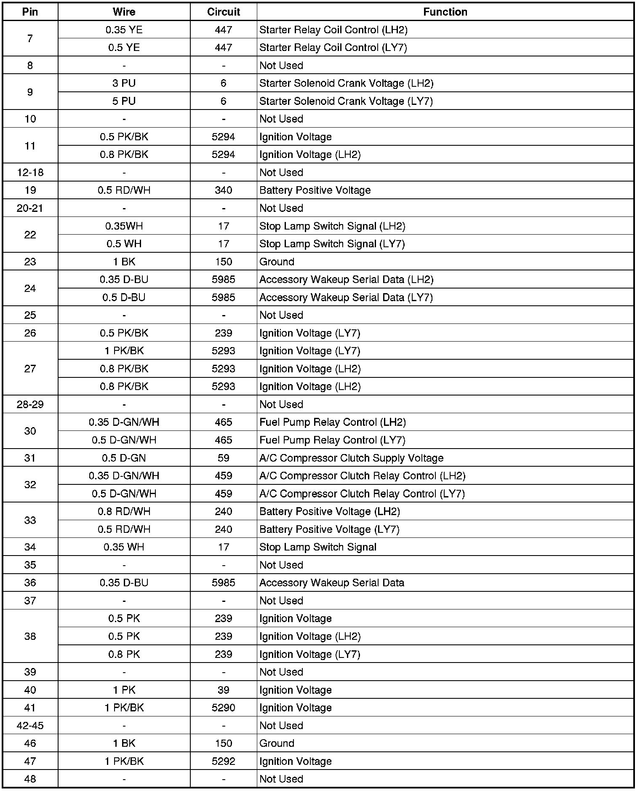
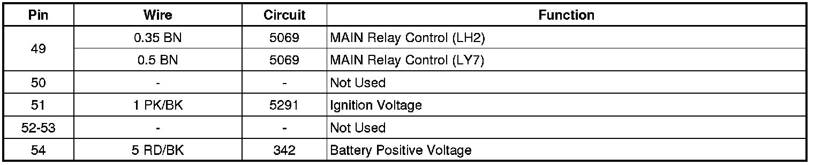